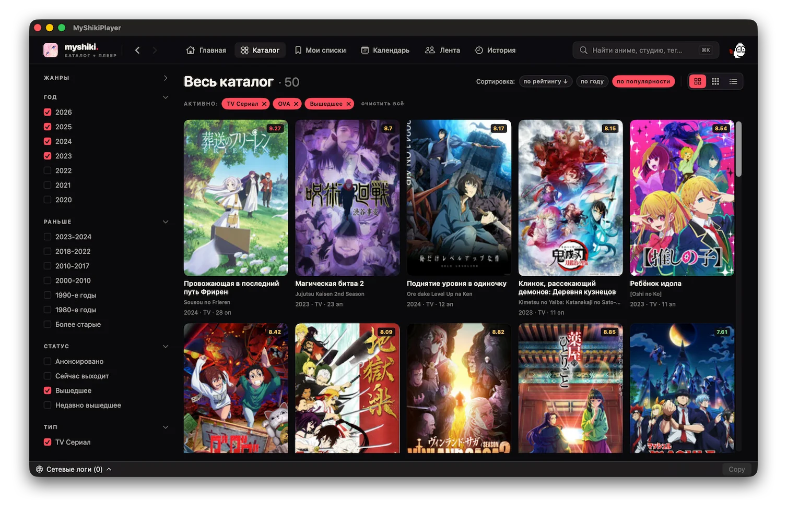

Встроенный плеер
AVPlayer, выбор дубляжа и субтитров, скорость, ±10/80 с, оптимистичный seek, авто-resume с прогрессом.
MyShikiPlayer — быстрый клиент Shikimori для macOS с встроенным плеером, дубляжами, субтитрами и прогрессом просмотра. Без браузерных вкладок, без рекламы, без лишнего.

Всё, ради чего обычно держат три открытых вкладки.
AVPlayer, выбор дубляжа и субтитров, скорость, ±10/80 с, оптимистичный seek, авто-resume с прогрессом.
Жанры, годы, статус, тип, рейтинг, сортировка. Сетка и список. Всё с серверной пагинацией и кэшем на диск.
Календарь по дням недели, обложки в сетке, быстрый переход к новым эпизодам.
Смотрю, запланировано, отложено, просмотрено, брошено. Оценки и прогресс синхронизируются через user_rates.
Друзья, обсуждения, обзоры. Чтение топиков и комментариев прямо в приложении.
Список «Продолжить смотреть», тайм-коды эпизодов, мгновенный возврат к нужной точке.
Тёмная тема Midnight Otaku, типографика и сетки — всё родное SwiftUI.
Готовый DMG из релизов или сборка из исходников.
MyShikiPlayer.app в Applications.git clone https://github.com/korenskoy/MyShikiPlayer.git
cd MyShikiPlayer
cp Configuration/Secrets.example.xcconfig \
Configuration/Secrets.xcconfig
# заполнить SHIKIMORI_* и KODIK_API_TOKEN
open MyShikiPlayer.xcodeproj